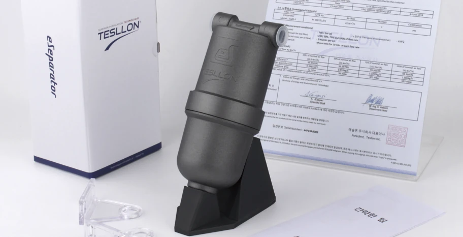
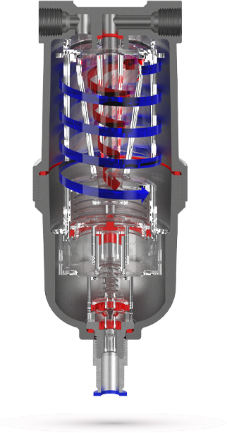
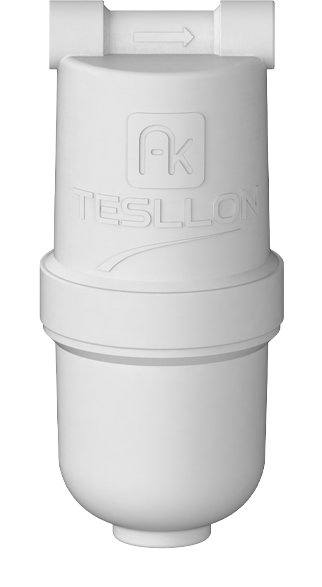
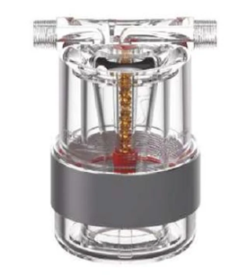
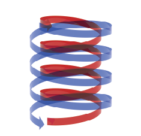
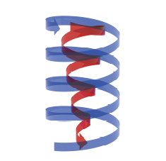
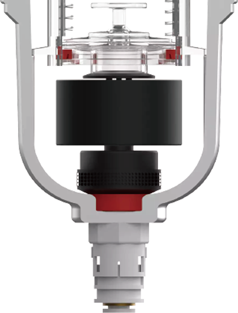
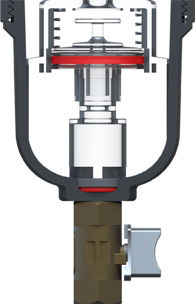
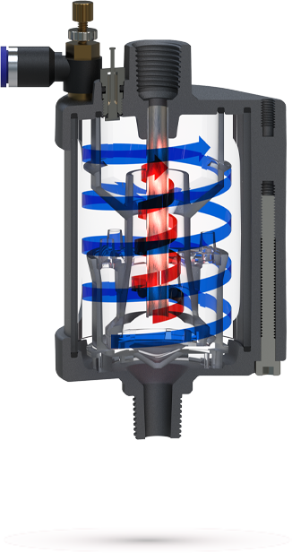

产品信息
压缩空气用分离器
eSeparator iA03 是利用离心力分离压缩空气中冷凝水的工业用分离器。
已在日本取得专利（专利第6246950号）。无更换式滤芯，免维护，水分去除率达 99.9997%（ISO 12500-4）。
连接在机械、机器人、涂装设备等的空气配管上。不使用更换式滤芯，分离出的冷凝水由自动排水器排出。选型时需确认使用流量、压力和连接口径。

eSeparator iA03 厂商规格
- 最大处理流量
- 800 L/min
- 最高使用压力
- 9.9 bar
- 配管连接口径
- 3/8 in (10A)
- 使用温度
- 5–60 °C
- 外形尺寸
- 85 × 85 × 197 mm
相关机型有抗菌规格的 HA03、小型便携式 AF02、测量套件 AM02。选型时请告知管路的流量、压力和连接口径。
联系我们结构与外观
不设更换式滤芯，利用内部产生的旋流分离水分和异物。




Tandem Cyclone
串联多级旋风的原理
通过分级叠加旋流，从大水滴到微细颗粒依次分离。

STEP 1
一级旋风
分离较大的异物和水分。

STEP 2
外部旋风
在聚集颗粒的同时逐渐加速。

STEP 3
二级旋风
分离颗粒、油分和微细水分。

STEP 4
内部旋风
保持旋转直到最后，提高分离性能。
排水方式
分离出的水分从主机下部排出。请根据使用条件选择排水方式。



柱塞式不使用电气装置，随流量变化自动排水。连续大量使用压缩空气的管路适合浮子式。
AIR FINN
可在手边使用的小型水分过滤器
安装在气枪、喷枪等气动设备前端的小型款。
在配管末端分离水分和异物，减少对吹扫作业和涂装效果的影响。适用设备和连接口径请咨询。
联系我们

介绍视频
可通过带日语字幕的视频了解原理和性能比较。